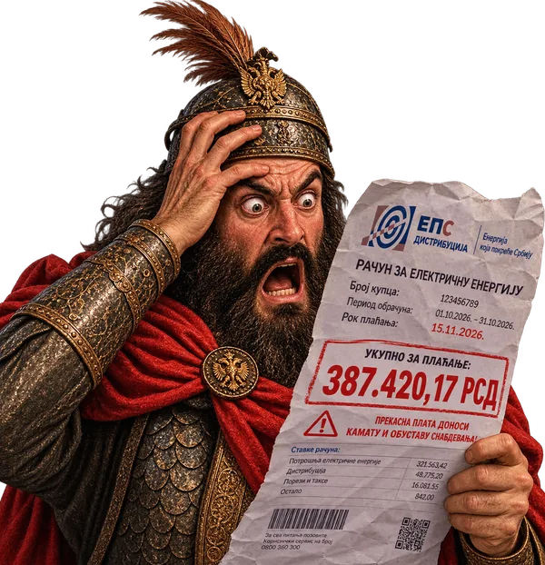

Дневник бројила
Да рачун не изненади.
Само на овом уређају
Ново очитавање
Потрошња и спољна температура кроз време
Горе је просечна дневна потрошња између два очитавања, доле средња дневна спољна температура за Београд. Оба графикона деле временску осу.
ВТ
НТ
Спољна температура
Потрошња према спољној температури
Свака тачка је један интервал између очитавања. Линија показује колико потрошња расте када захлади.
Ранији интервали
Последњи интервал
Тренд
Очитавања
Синхронизација и резервна копија
Синхронизација између уређаја
Унеси адресу Supabase пројекта и publishable кључ на сваком уређају. Без тога очитавања остају само на овом уређају.
Резервна копија
Преузми сва очитавања као један фајл или их врати из фајла. Враћање само додаје очитавања, ништа не брише.